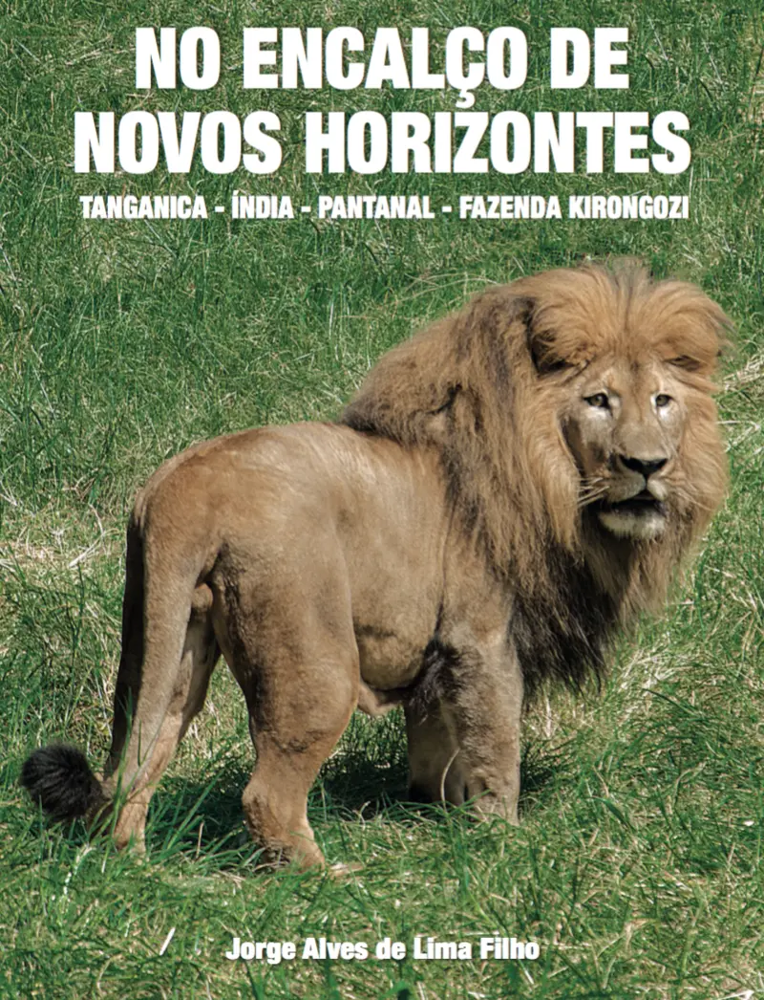
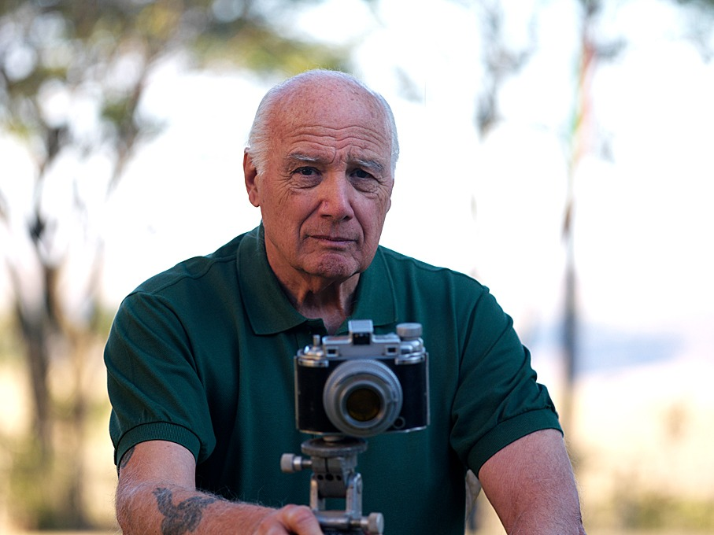
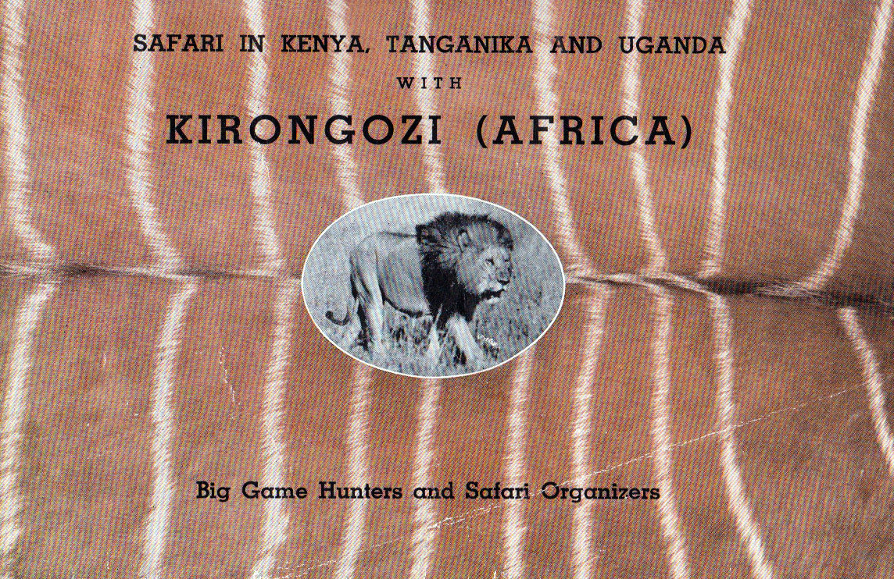
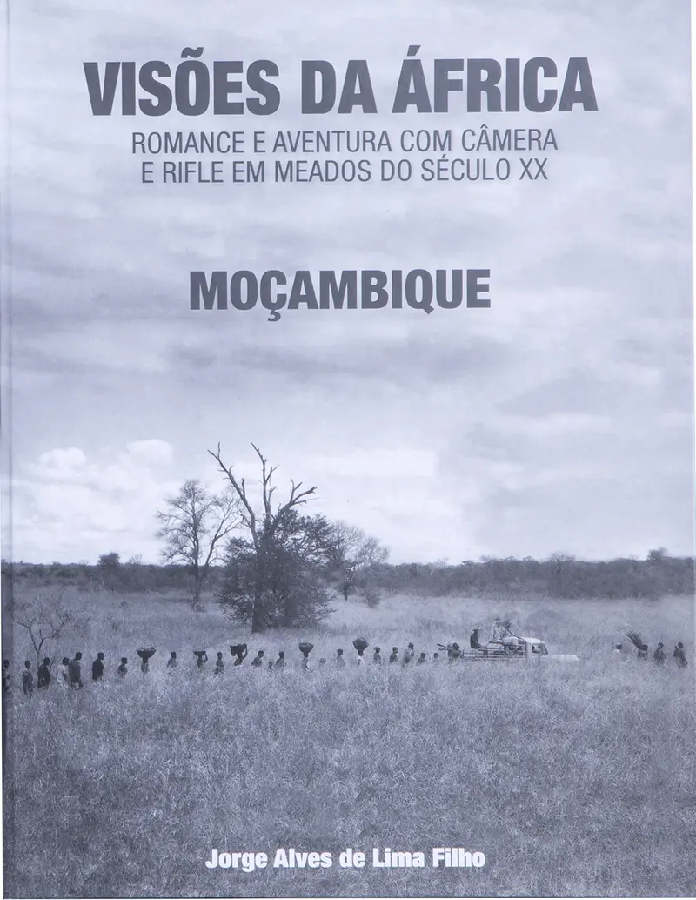
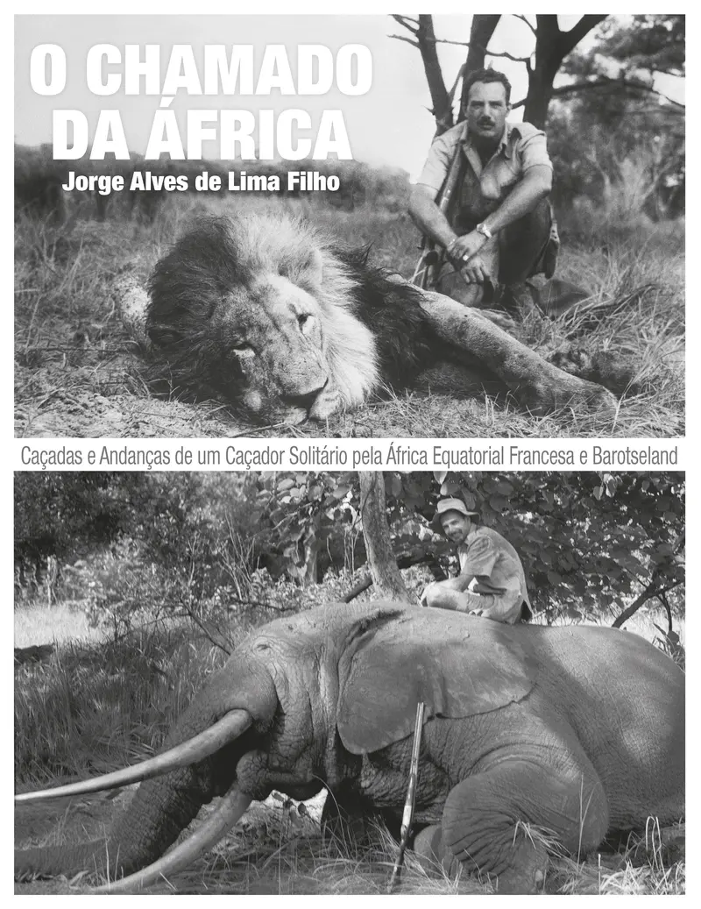
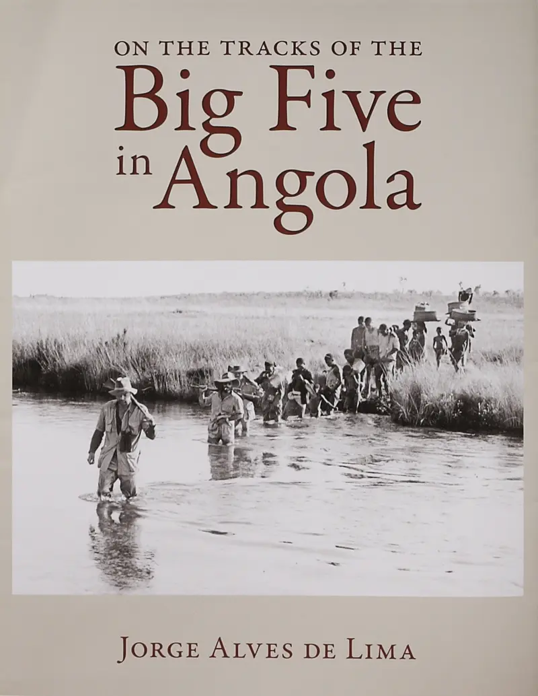
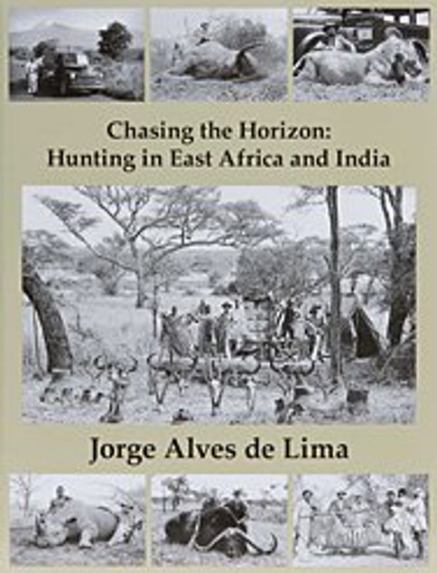
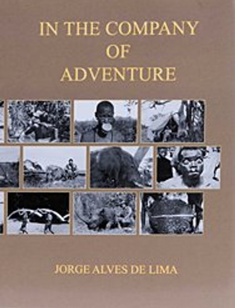

No Encalço de Novos Horizontes
R$ 350 + frete
ComprarFundação Kirongozi
Propósitos que guiam a Fundação Kirongozi.

Sobre nós
A Fundação Kirongozi nasce do apreço e do respeito pela natureza, pela preservação da história e pela integração com a comunidade.
Sua criação dá continuidade a uma profunda conexão com o mundo natural e com a vida animal, valores que marcaram a trajetória de Jorge Alves de Lima Filho, cuja vida foi moldada pela convivência direta com a terra, a fauna e os territórios por onde passou como caçador, observador e explorador.
Essa vivência ao longo do tempo formou um olhar atento sobre os ciclos naturais, o valor da preservação e a responsabilidade humana diante da riqueza do meio ambiente. É a partir desse legado que a Kirongozi atua hoje para preservar o patrimônio natural, promover experiências autênticas em harmonia com a natureza e gerar impacto positivo para as comunidades locais por meio de iniciativas sociais, culturais e educacionais.
Os projetos desenvolvidos buscam aproximar as pessoas de experiências reais com o território, a cultura e o ambiente, estimulando consciência, respeito e cuidado com o mundo natural. Preservar, aqui, também significa compartilhar histórias, conhecimentos e vivências construídas ao longo do tempo.

História
Jorge nasceu em 1926, em uma família brasileira influente, e construiu uma trajetória marcada pela aventura, pelo contato com diferentes culturas e por uma profunda conexão com a natureza. Aos 22 anos, iniciou suas expedições pela África Equatorial Francesa, levando uma câmera e um rifle. Nas décadas seguintes, percorreu o continente africano, tornando-se caçador profissional e empresário de safáris.
Sua atuação ocorreu em um contexto histórico entre as décadas de 1940 e 1960. A convivência intensa com a fauna africana e os territórios onde viveu desenvolveu nele um profundo conhecimento sobre os ciclos naturais, a importância do equilíbrio ambiental e a responsabilidade humana na relação com a natureza.
Após décadas na África, Jorge retornou ao Brasil e transformou a Fazenda Kirongozi, no interior de São Paulo, em seu “pedaço da África”. Jorge faleceu em 4 de maio de 2024, em São Paulo, mas sua história permanece viva por meio de sua família, suas obras e da atuação da Fundação.
Nosso compromisso
A preservação ambiental é o pilar central da Fundação Kirongozi.
Atuamos de forma ativa na proteção da fauna e da flora, no manejo responsável dos recursos naturais e na promoção da educação ambiental.
Nossas iniciativas incluem programas de conservação, pesquisa, recuperação de áreas naturais e ações educativas que estimulam a consciência ecológica e o respeito ao meio ambiente.
Hotelaria e bem-estar
Na Kirongozi, a hospedagem é pensada como um convite ao tempo mais lento. Um lugar onde conforto e simplicidade caminham juntos, em sintonia com a natureza ao redor. Cada detalhe foi criado para que o visitante possa se desconectar da rotina, respirar fundo e se reconectar com o ambiente natural.
Nossa proposta de hotelaria sustentável valoriza experiências reais. Caminhadas guiadas, vivências ecológicas, momentos de observação da natureza e atividades pensadas com cuidado fazem parte dessa jornada, sempre respeitando o ritmo de cada pessoa.
Acomodações e novas experiências estão em desenvolvimento.
Consultar disponibilidadeEventos
A Fazenda Kirongozi é um espaço onde encontros ganham significado.
Cercada pela natureza, ela oferece o cenário para eventos especiais que pedem tempo, presença e conexão. Recebemos encontros corporativos, retiros de bem-estar, eventos culturais, celebrações familiares e experiências exclusivas, sempre com cuidado e respeito pelo ambiente natural.
Acervo
O acervo da Fundação Kirongozi preserva a memória, a trajetória e os valores que deram origem à sua criação.
A coleção reúne documentos, objetos, fotografias e relatos de Jorge Alves de Lima Filho, assim como de amigos e clientes que compartilharam experiências nas savanas africanas entre as décadas de 1940 e 1970.
Essas histórias, registradas em outro tempo e contexto, ajudam a compreender a relação entre o ser humano e a natureza ao longo da história. Mais do que guardar memória, o acervo oferece uma experiência cultural que estimula a escuta, a reflexão e o aprendizado.
Agende sua visitaPublicações
Obras que registram viagens, experiências e diferentes períodos de sua trajetória.

R$ 350 + frete
Comprar
R$ 600 + frete
Comprar
R$ 250 + frete
Comprar
R$ 586 + frete
Comprar
Consulte a disponibilidade no Brasil
Consultar compra
Consulte a disponibilidade no Brasil
Consultar compraParticipe e apoie
A Fundação Kirongozi é feita de pessoas e ideias, e construída em conjunto. Cada visita, parceria, doação ou participação em projetos e eventos ajuda a manter nossas iniciativas vivas e em movimento.
Juntos, seguimos cuidando da natureza, compartilhando histórias e criando impacto positivo em nossa comunidade.
Quero participarContato
Para saber mais sobre nossas iniciativas, hospedagem, experiências, eventos ou formas de participar e ajudar, entre em contato conosco.
info@kirongozi.com Fazenda Kirongozi